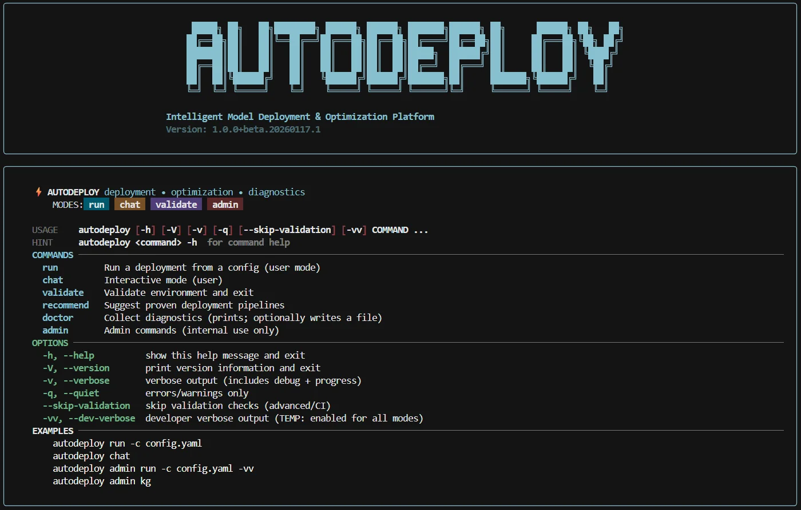
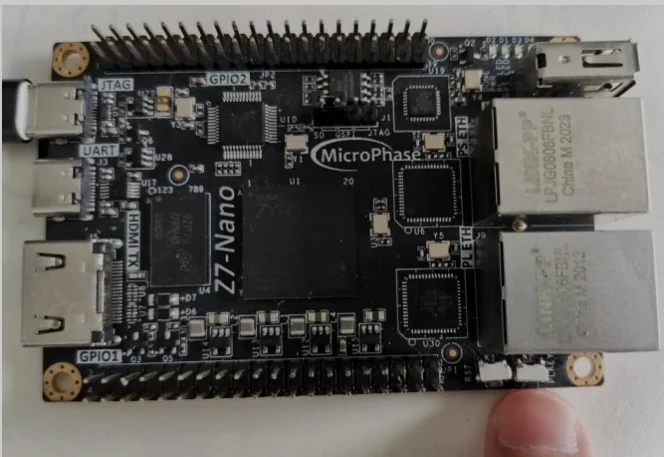

Made speculative decoding work inside a real inference runtime.
Reproduced DFlash and DSpark for Qwen3.5-4B, developed a DSpark-capable vLLM runtime, and investigated model-loading, hybrid-attention and CUDA Graph compatibility.
Benchmarked target-only and speculative inference on GSM8K, HumanEval and MT-Bench using RTX 4090 systems.
vLLMPyTorchRuntime integrationGPU benchmarking
01
Build
Integrate models, runtimes and deployment tools into usable workflows.
02
Measure
Use throughput, latency and correctness to understand system behavior.
03
Communicate
Turn experiments into clear technical explanations and reproducible evidence.
02 / SELECTED WORK
Technical depth. Practical impact.
A quick view for recruiters. Open a project for the engineering details.
SPECULATIVE DECODING
DRAFT ↘
t₁t₂t₃t₄
TARGET ✓
PROPOSE → VERIFY → CONTINUE
Ongoing · IHEP
LLM inference
Faster generation, understood through experiments.
Trained a three-layer DFlash draft model and evaluated draft-budget trade-offs in vLLM for Qwen3.5-4B.
Engineering details +
Draft acceptance, scheduler behavior, latency, throughput and answer correctness. Subsequent IHEP experiments use RTX 5090 hardware, separate from the internship. Manuscript in preparation for CSCWD 2027; no acceptance claimed.

01 / 04
A practical interface for deployment, validation and diagnostics.
Engineering · Master’s thesis
AutoDeploy
From model to optimized deployment.
Built AutoDeploy to turn model deployment into a guided workflow: inspect the model, choose an optimization path, execute it and keep reusable evidence.
Engineering details +
ParT TensorRT FP16: 0.972 ms, approximately 10.4× eager baseline speed. ParticleNet TensorRT FP32: 0.456 ms, approximately 6.6×. NVIDIA V100, batch size 1, configuration-specific. ParticleNet FP16 showed an accuracy trade-off. CPU ParT reference: 15.7 ms.

Exploration
Hardware exploration
Software meets silicon.
Explored FPGA-oriented model deployment and hardware-aware machine learning.
Engineering details +
Work spans model representation, deployment constraints and heterogeneous hardware. Hardware exploration is presented separately from the verified GPU benchmark results.
ALSO IN MY TOOLKIT
Understanding how models learn as they scale.
Experience exploring model scaling and foundation-model learning curves: how model size, training data and training duration shape learning, generalization and bottlenecks.
03 / BEYOND THE CODE
Curiosity has more than one outlet.
World building, AI music and a life in motion.
Unreal Engine 5 · A world-building hobbyUE5 / METAHUMAN
I explore environment design, interactive scenes and digital characters with Unreal Engine 5 and MetaHuman. A space to experiment with visual storytelling.
PERSONAL / AI-GENERATED
For Palestine
An AI-generated music video I created for Palestine.
PERSONAL / AI-GENERATED
A song for Xiao Mi
A Chinese AI-generated music video made to comfort a close friend, Xiao Mi.
♫
Fire in the Rubble
AI-generated music · personal hobby
♫
Lion of My Chest
AI-generated music · personal hobby
♫
River to Sea
AI-generated music · personal hobby
Away from the screen
Volleyball player. Spurs supporter. Always curious.
I’m Abdulhafiz A. Mustofa, an AI and machine learning engineer based in Beijing. My experience connects LLM inference, model deployment and scientific computing—with a growing interest in autonomous agents.
I enjoy debugging difficult systems, understanding performance bottlenecks and turning technical work into something people can use.